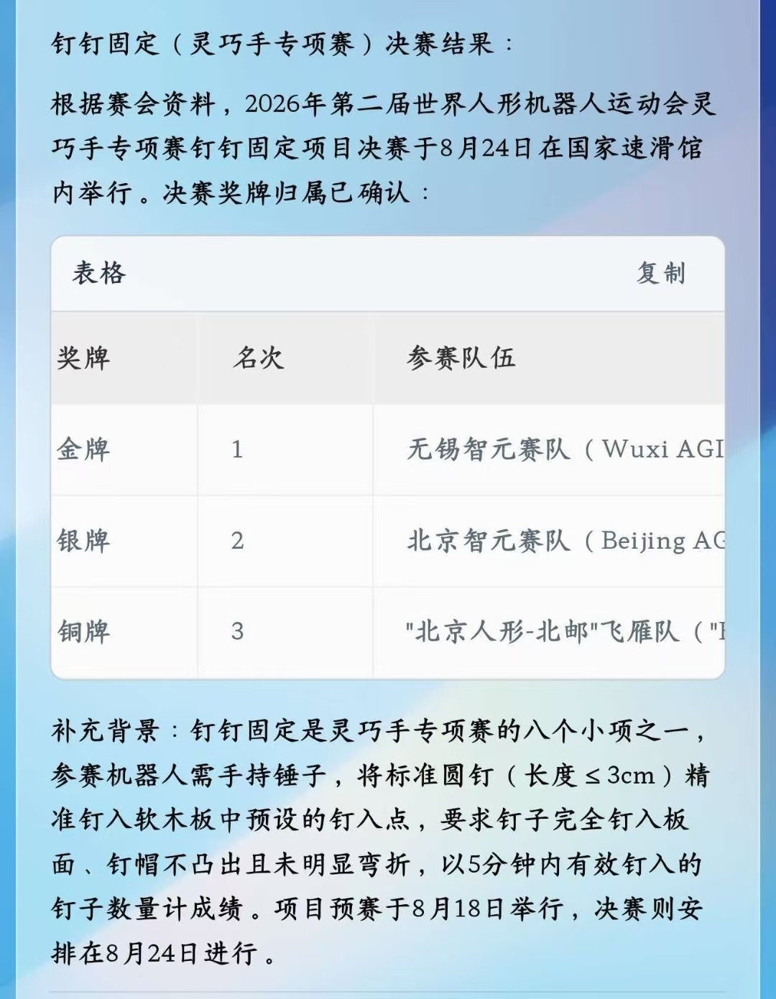
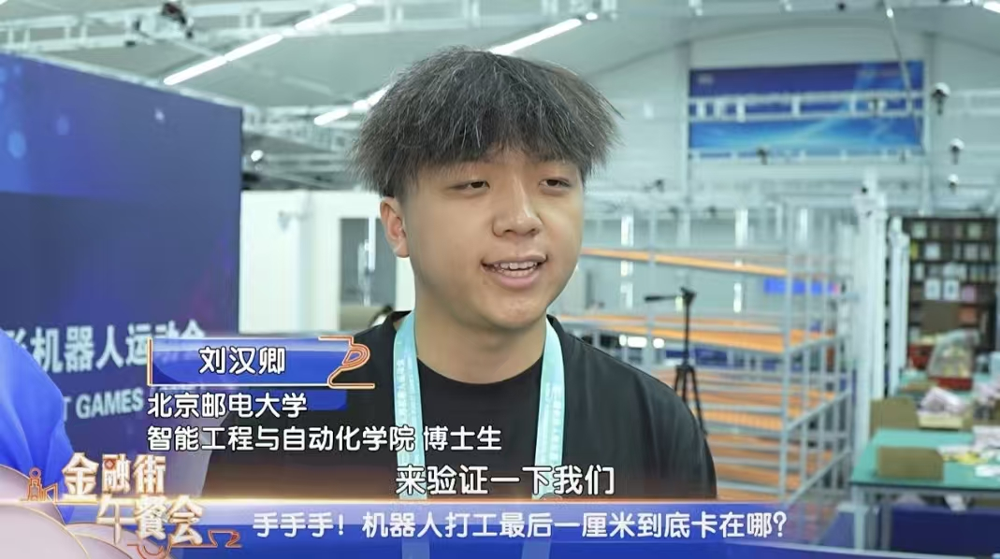

☆ 北邮IRES实验室在第二届世界人形机器人运动会灵巧手专项赛上获得佳绩
北邮IRES实验室在第二届世界人形机器人运动会灵巧手专项赛上获得季军铜牌1枚，灵巧手操作锤子将钉子快速精准钉到物体上，获得殿军第4名2枚以及第6名1枚，第7名2枚，第8名1枚。课题组博士生刘汉卿等同学接受北京电视台、中央电视台等媒体采访。
相关视频链接： https://weixin.qq.com/sph/AgWuU3oLcg


北邮IRES实验室在第二届世界人形机器人运动会灵巧手专项赛上获得季军铜牌1枚，灵巧手操作锤子将钉子快速精准钉到物体上，获得殿军第4名2枚以及第6名1枚，第7名2枚，第8名1枚。课题组博士生刘汉卿等同学接受北京电视台、中央电视台等媒体采访。
相关视频链接： https://weixin.qq.com/sph/AgWuU3oLcg



@ Sep 20, 2025 | Album